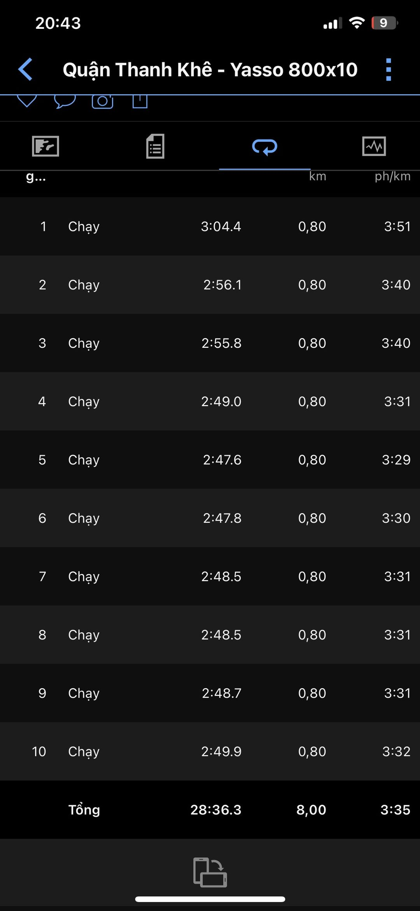

YASSO!
Nếu các bạn tập theo giáo án bài bản cho FM thì biến tốc, ngoài các bài Interval, Tempo quen thuộc thì còn có 1 bài tập có tên Yasso.
👉 Yasso là gì?
Yasso là tên bài tâp lấy theo tên của người phát minh ra bài tập này - Bart Yasso. Ông là 1 VĐV marathon nổi tiếng. Còn ổng ở đâu, làm gì, vợ con chưa, có giàu ko thì các bác qua nhà chị Gúc Gồ hỏi 😁. Ông tình cờ phát hiện ra phương pháp tập biến tốc của mình có thời gian khá tương đồng với thời gian hòan thành cuộc đua FM. Cụ thể là 1 tổ bài tập Yasso nếu có thời gian hoàn thành là 2 phút 55 giây, thì thời gian hoàn thành FM là 2h55p. Và ông áp dụng rất hiệu quả trong giáo án tập luyện của mình trước các race FM, và đặc biệt là nó khá chính xác.
👉 Mục đích của tập Yasso?
Yasso là bài tập biến tốc, do đó, theo các HLV, các elite và các chuyên gia thì bài tập này cải thiện rõ rệt về tốc độ và đồng thời tăng sức cơ khá rõ
👉 Cấu trúc của 1 bài tập Yasso?
Về lý thuyết thì Yasso có thể tập ở 400m, 800m cho mỗi tổ. Tuy nhiên, ngày nay, hầu hết các vđv ưa thích tập ở tổ 800m hơn và cho thấy tính hiệu quả rõ hơn so với tập 400m, nên lâu dần mn hay gọi là Yasso 800.

Mỗi bài tập như sau:
👃 Khởi động, ép cơ ~15p
👃 Tập các bài Drills (Hỏi gúc gồ, hoặc chờ bài viết sau 😁)
👃 Chạy warming up 2km
👃 Mỗi tổ gồm chạy 800m pace all-out (hoặc pace đua 5km). Phục hồi bằng đi bộ hoặc đứng nghỉ bằng đúng thời gian chạy.
VD: Thời gian chạy là 3p thì thời gian phục hồi cũng 3p
Việc xác định pace như sau: Nếu bạn có target FM là 3h10p, thì thời gian hoàn thành 800 chạy Yasso tương ứng là 3p10s. Vậy thì pace chạy 800m Yasso khoảng 3:57 (Nếu theo VDOT thì pace này gần tương đương pace tập Interval)
👃 Cool-down 1-2km
👃 Tập từ 6-10 tổ. Khi đạt được 10 tổ thì duy trì và bài Yasso cuối cùng kết thúc khoảng 2 tuần trước raceTập Yasso ko có nghĩa là tập xong mỗi tổ trong thời gian 2p55s là múc được FM 2h55 mô đó nạ.
Mà đó là tổng thể các bài tập khác nhau được phối hợp 1 cách bài bản và nếu tập Yasso là có thể dự đoán được thành tích của mình cho FM nhưng phải là 1 quá trình.
Đối với các bài biến tốc thì đều có tác dụng cải thiện sức khỏe tim phổi, cải thiện tốc độ.
Tuy nhiên, mỗi bài đều có tác dụng riêng của nó, và ko hẳn là mn phải tập hết tất cả các bài trong giáo án.
Tùy theo khả năng, cơ địa, sở thích và mục tiêu để có thể chọn bài tập phù hợp cho mình.
Cơ mà tập mà ko mửa đời ko nể 😂
Hình là bài tập Yasso hôm nay của Lãng. Cơ mà ko phải tập cho FM sub3 mô đó. Chẳng qua mát trời mần cấy rứa thôi á 😁

P/s:
Bản quyền bài thuộc về HTR - Hà Tĩnh Marathon team
Copy vui lòng ghi rõ nguồn
#KienThucChayBo
#Yasso